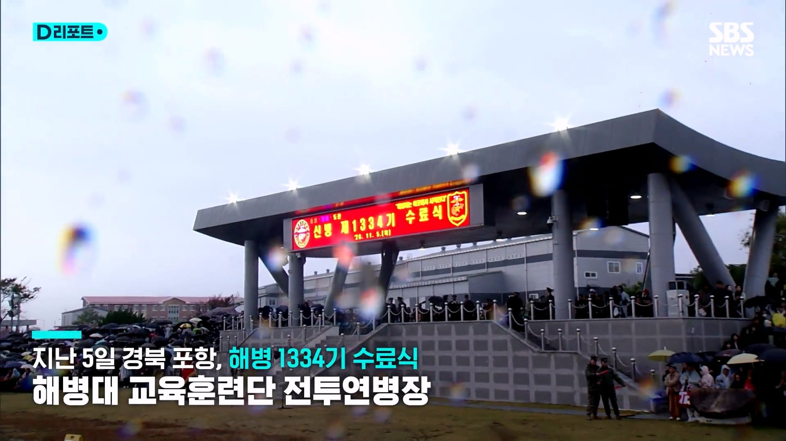
지난 5일 경북 포항 해병대 교육훈련단
전투연병장에서 열린 해병 1334기 수료식
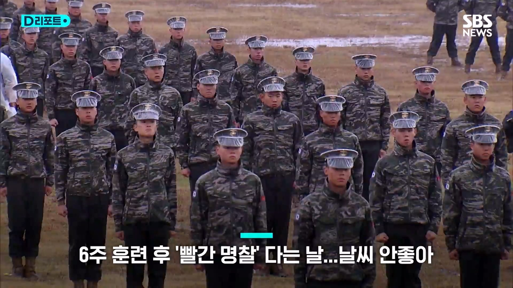
6주간의 고된 훈련을 마치고 가족들 앞에서
빨간 명찰과 이등병 계급장을 가슴에 다는 뜻깊은
날이지만 날씨가 도와주지 않습니다
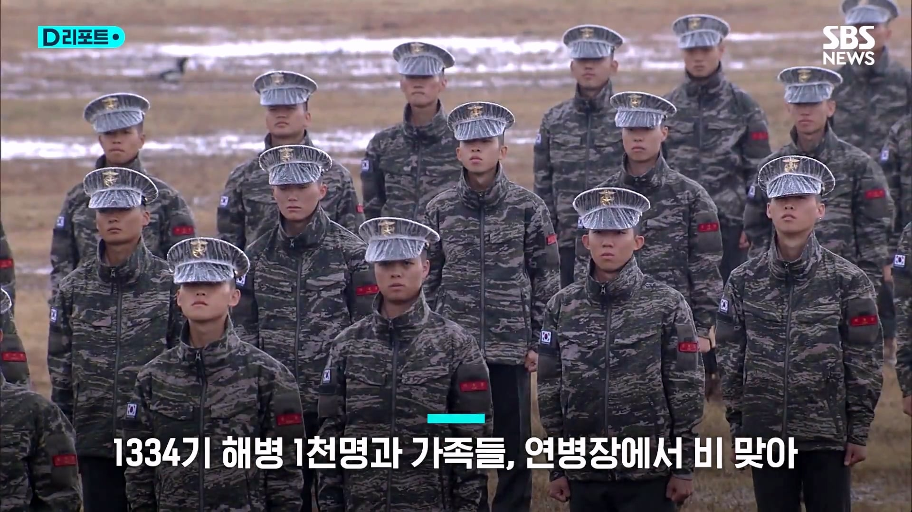
그날 하루 20mm 이상 비가 쏟아지는 바람에
1334기 해병 1천 명과 수천을 헤아리는 가족들은
연병장에서 속절없이 비를 맞았습니다
사열단에 자리 잡은 교육훈련단 지휘부는
지붕 덕에 비를 피할 수 있었지만
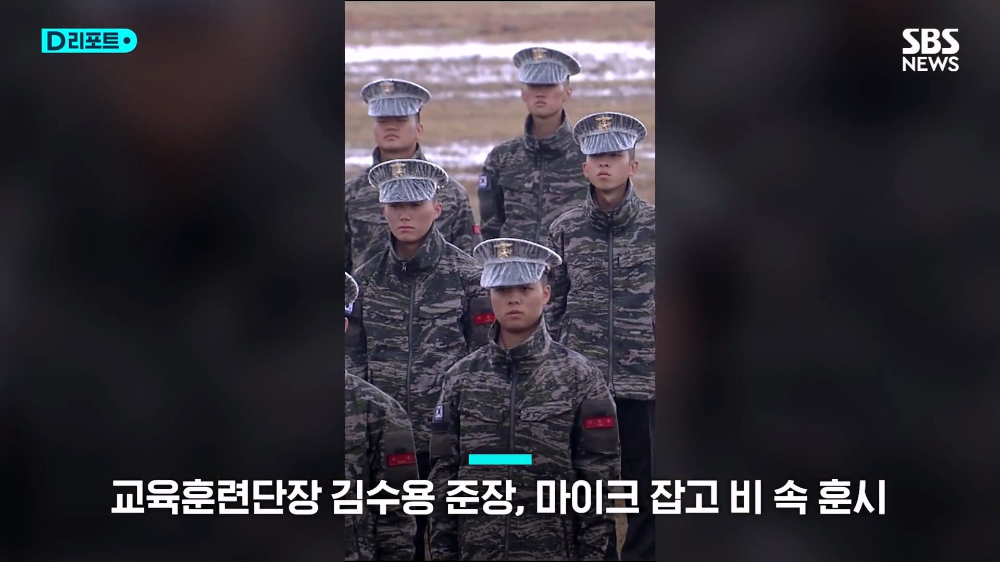
훈시에 나선 교육훈련단장 김수용 준장은
마이크를 빼어 들더니 지붕 바깥
비 속으로 걸어갑니다
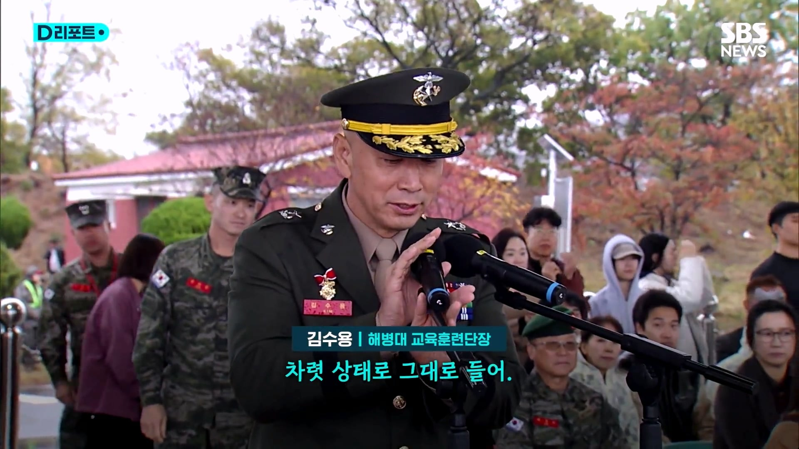
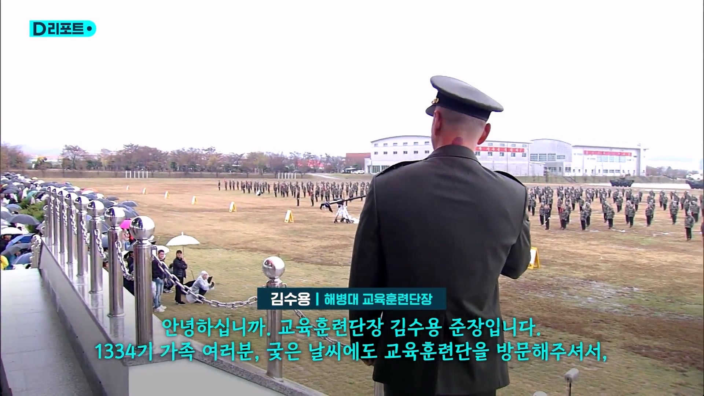
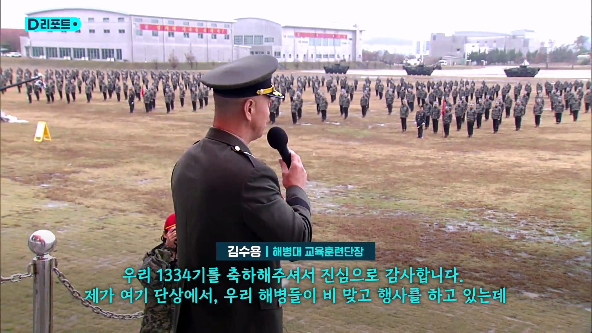
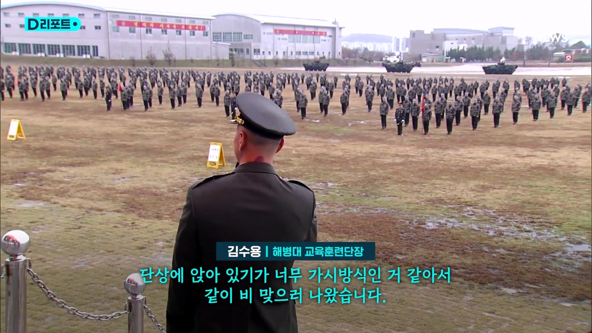
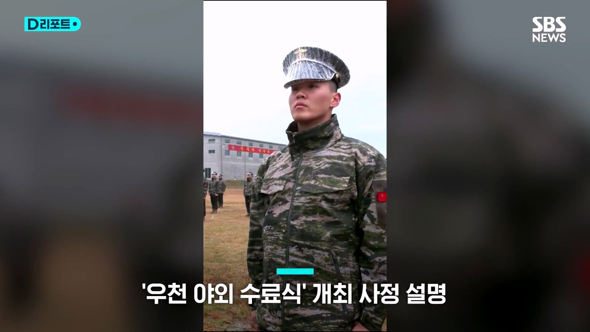
우천 관계로 수료식을 실내에서 해도 되지만,
갓 이등병이 되는 해병들이 야외에서 하자고
주장해서 우천 야외 수료식을 하게 된
사정도 설명했습니다
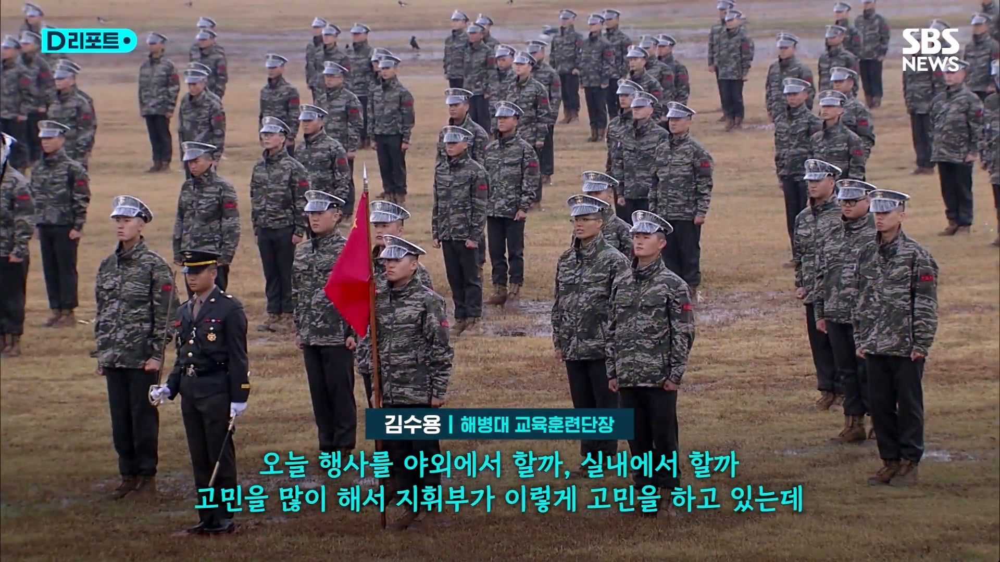
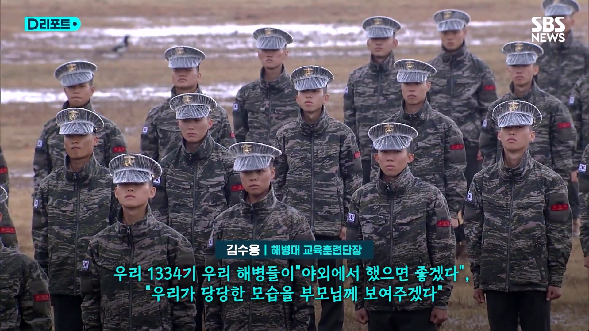
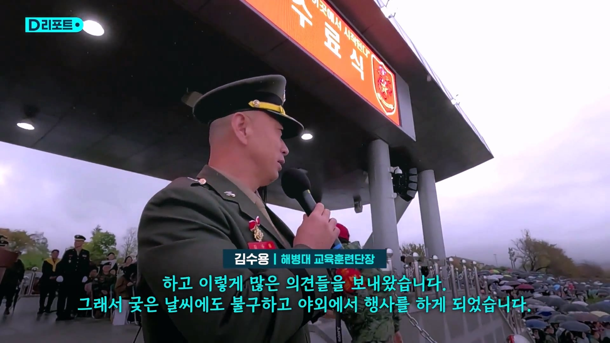
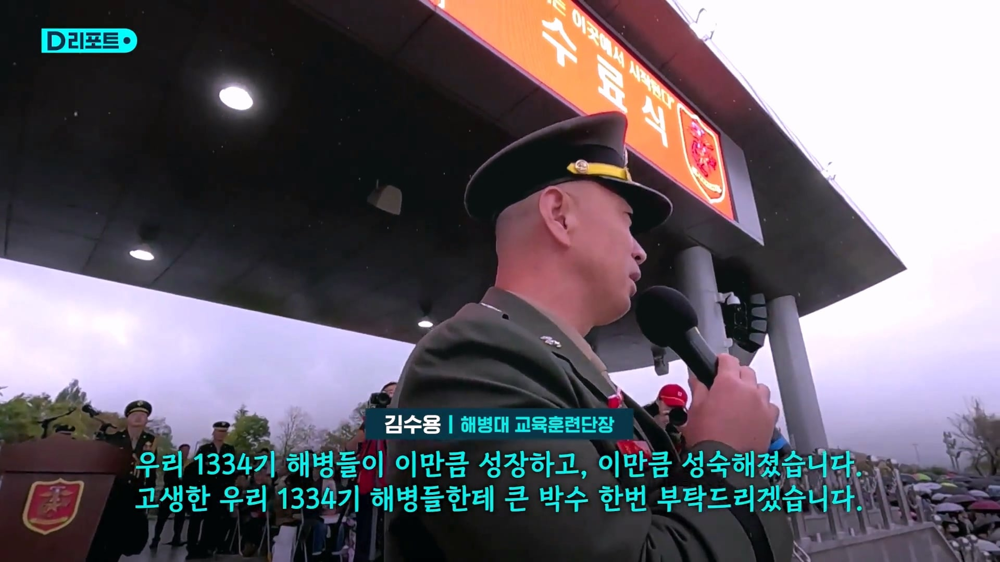
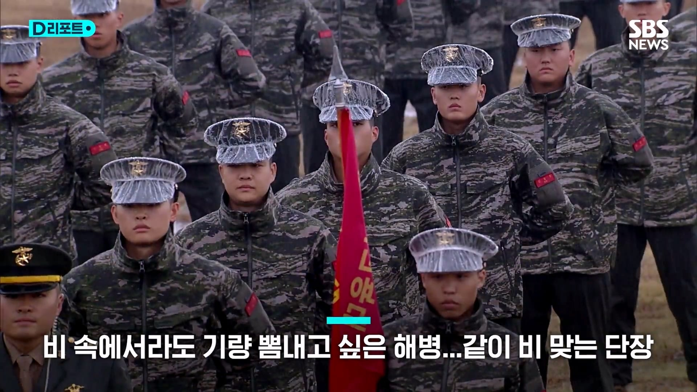
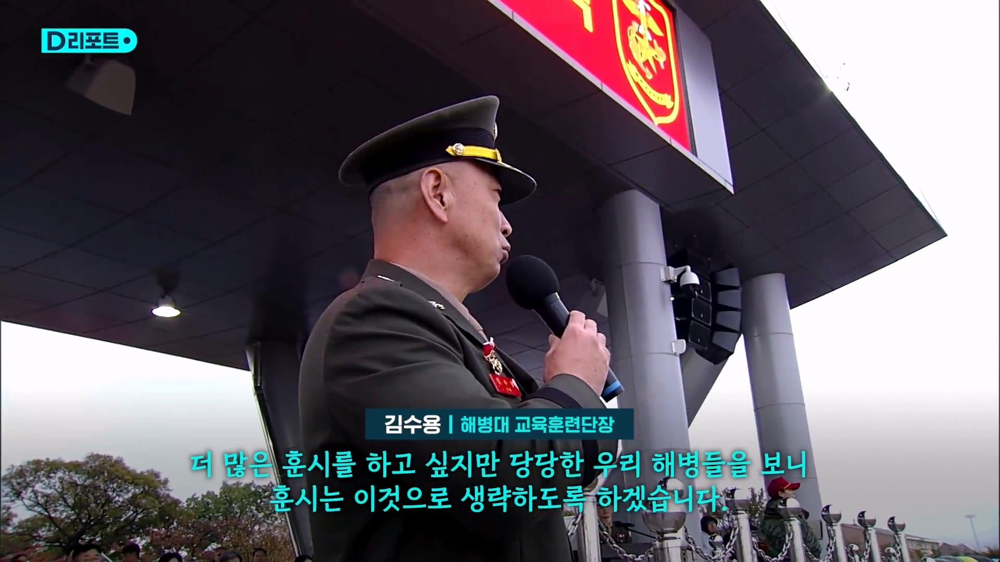
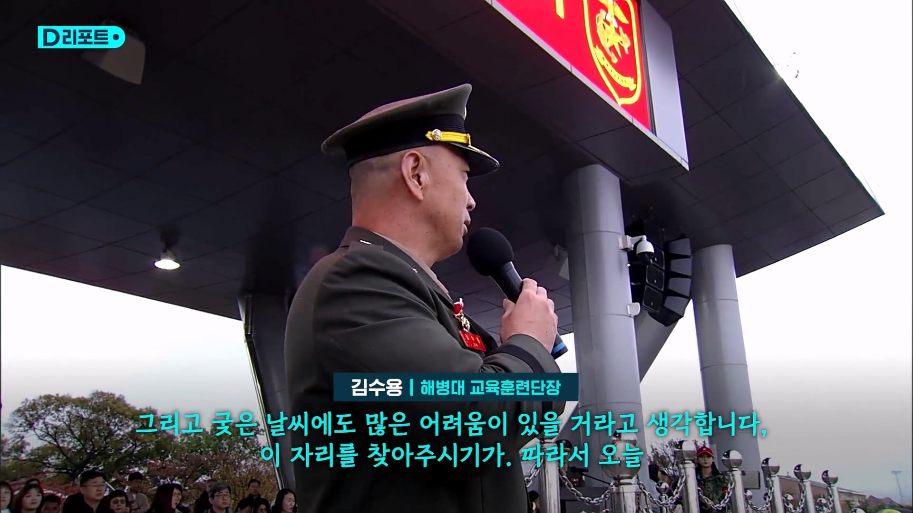
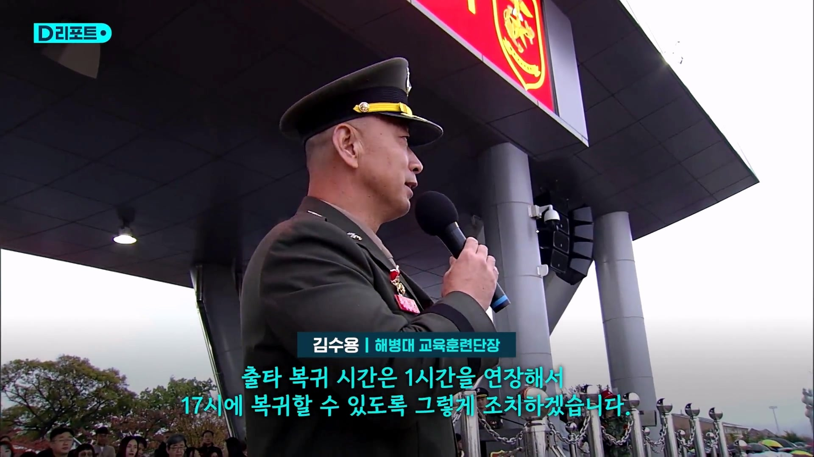
링크
기합이다